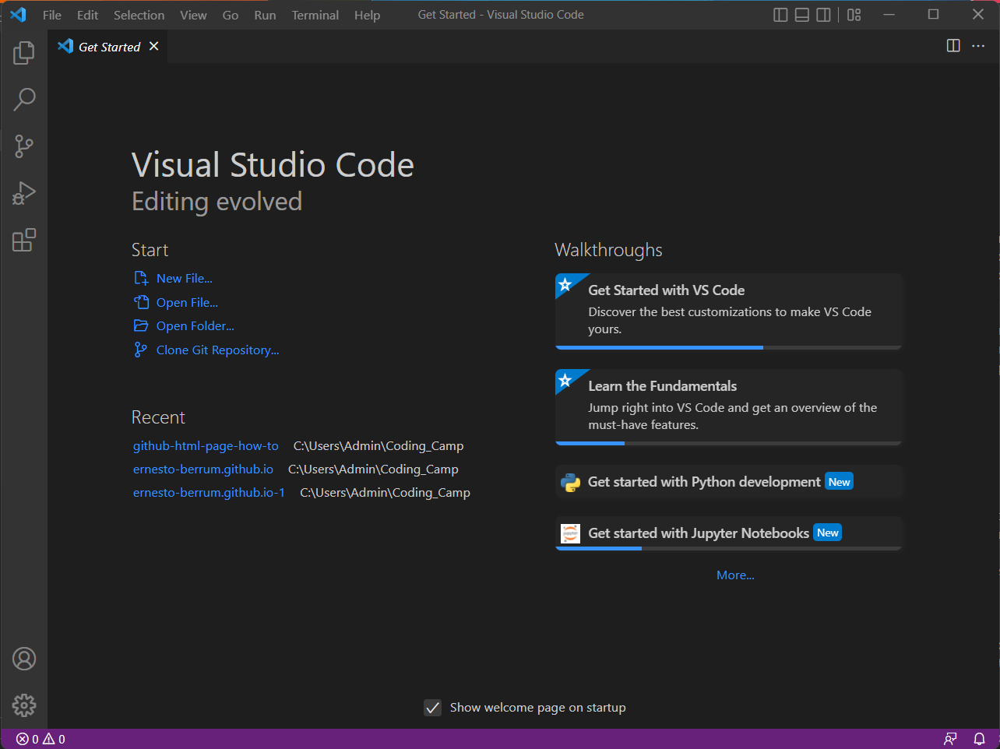
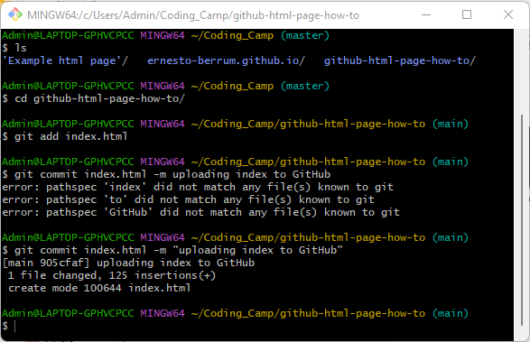

Now go back to your GitHub account in your browser and click on "code" a module will appear and will allow you to copy the github url to your repository.

Copy the url and insert it in the VS Code interface.
Pre-requisites
1. Understanding how to create files using an integrated development environment (IDE) and having an IDE installed on your computer
2. Understanding how to navigate your computer's terminal so that you may create, look for, and call functions from your terminal
Step 1 - Creating a GitHub account.
To create a github page you will first need a github account.
A github account is free to create and you may use it for various reasons.
Go to this link and create your free account by click on the sign up button:
link
Step 2 - creating a repository.
Once you have created a github account you will need to create a repository that will house the code needed to create the page.
In the github website navigate to your main dashboard and click on "repository" the repository is located next to the "overview" page on the top of the github page.
Once you are in the repository page you will need to click on "new" this will lead you to the following page below.
On this page you will want to name your repository the exact same name as your github account.
For example if my github account's name was JaneDoe then the repository name should be named JaneDoe as well.
Ensure that your repository is set to public so that you may access it from a browser later in this tutorial.
Be sure to add the description of your repository and click on the "add readme file" option that appears on the page.
This is not necessary but it is good practice to have these included when adding a new repository.
Step 3 - Setting up your GitHub repository in your local computer.
Once you have your repository set up you are going to clone your online repository to your personal computer. This is referred to as your local computer.
To do this you will need to open up your IDE and open up your github repository. In this example we will use Visual Studio Code to clone our GitHub repository.
Visual Studio Code is a free IDE that is offered by Microsoft and is used by many developers.
Here is a link to instal Visual Studio Code on your computer: link
When installing please install with all the reccommended options that the instaler will prompt you with.
Once installed you must log into your github account by clicking on the account icon located at the bottom left of the Visual Studio Code application.

Doing this will allow you to copy repositories created in GitHub and will also allow you to updated these repositories directly from Visual Studio Code.
To copy the repository click on "Clone Git Repository.."
Now go back to your GitHub account in your browser and click on "code" a module will appear and will allow you to copy the github url to your repository.
Copy the url and insert it in the VS Code interface.
Step 4 - Addiding an HTML file to your repository.
Now that you have your repository on your local computer the next step is adding an HTML file named "index"
This is the file that the browser will read and display the information in the file for the world to see.
Websites have three core components that dictate the content shown, how the conent looks, and how the content interacts with the user.
For this tutorial we will just be focusing on the content being shown.
We will create a website that says "Hello there!"
Let us start by creating the index file. Click on the document icon with a plus sign next to it on the VS code interface.
Refer to the screenshot below to see where it is located. The file should be named "index.html"
Step 5 - adding the code that will be displayed on your website
Now that the index file has been created you will want to copy and paste the following code into the index file.
<html>
<h1> Hello there! </h1>
</html>
Save the index file once you have added the code above. Below is how it should look:
Step 6 - Publishing your code
The final step of the process is to submit your code from your local computer on to GitHub.
This can be done using VS Code by going to the "source control" page of VS Code.
From there you will notice that the index file is listed as needing to be commited.
This just means that the file you have on your local computer is either different or not in the GitHub repository.

Click on the check mark next to "source control" to commit the index file
Alternatively, you can use the terminal on your computer to "push" your new files or updated code to the GitHub repository.
In the example below we will use GitBash as the terminal. The commands listed here to "push" the files to the repository can be used on Mac's terminal as well.
While in the terminal ensure you are in the correct directory where your index file is located. Use the command pwd to see where you are in the terminal.
If you are not sure what files or folders are located in the directory you are in use command ls to display the folder and files.
Use command cd <folder> to navigate into that folder.
Once you are in the folder that houses your index file the following sequences of commands will allow you to "push" your newly created file to your GitHub repository.
First you will add the index file.
Use command git add <file name> to add the file.
Then you must commit the file. Use git commit <file name> -m "short description of your update to your GitHub repo"

*Note that the -m is needed along with a description of what your update is in order to complete this command. If you do not include quotation marks for your description you get the error message I got.
Finally you must "push" the changes. This is the equivalent of going live with the changes you have made. Use commmand git push to complete the process.
Step 7 - Viewing your GitHub website.
Go to your GitHub account and check that the changes you have made on your local computer and then published to your GitHub repository are showing.
If the file appears on the GitHub repository then you completed all the steps successfuly.
Open up a new tab on your browser and search for <your GitHub name>.github.io
This will bring you to your published page on the internet with the message "Hello there!" on the screen.